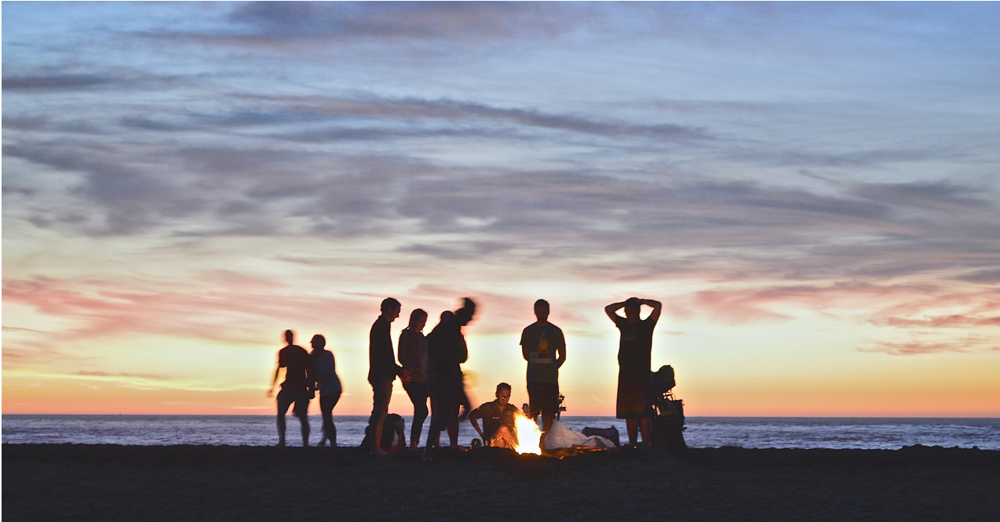

About student associations
University associations are a good idea to join since you can find similar people to you,
and your interests.
There are usually many options, related to sports, arts, sciences, and traveling.
Most of these annual fees are in a very friendly price range so you do not have to worry about the expenses.
To find great communities and associations, it is always a good idea to check out the universities' websites.
Usually under the name "communities" /"associations" you will find several options to choose from.
Be aware that in most cases, you can join a group in specific periods of the year like the beginning of one of the semesters.
In Eindhoven, I can recommend TU/e's website with infinite options, but if you have a subscription to SSC then you can also find sport group lessons through that.